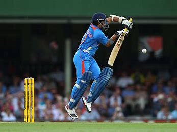
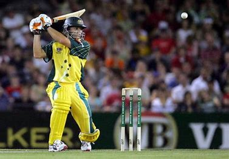
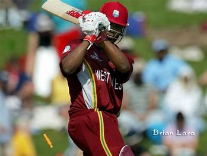
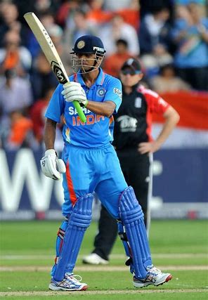
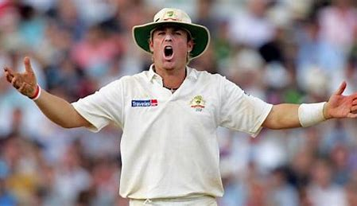
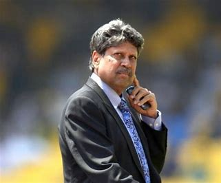

Hall Of Fame
The ICC Cricket Hall of Fame recognises "the achievements of the legends of the game from cricket's long and illustrious history.
It was launched by the International Cricket Council (ICC) in Dubai on 2 January 2009, in association with the Federation of International Cricketers'
Associations (FICA), as part of the ICC's centenary celebrations.
Sachin Tendulkar
First Person to score 100 centuries.
Adam Gilchrist
Holds the record for more number of Dismissals
Brian Lara
Holds Record For scoring 400 runs in Test Cricket.
Rahul Dravid
Holds the record for taking most catches as a non-wicketkeeper.
Shane Warne
Holds the record for most Test run ithout a century
kapil Dev
Captain of team india in world cup 1983